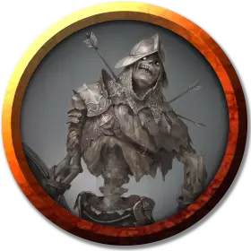

Солдат-нежить
Undead Soldier
Средняя Нежить, нейтрально-злая

Класс Доспеха 18 (латы)
Хиты 45 (6к8 + 18)
Скорость 30 футов
| мод | спас | ||
|---|---|---|---|
| СИЛ | 15 | +2 | +2 |
| ЛОВ | 14 | +2 | +2 |
| ТЕЛ | 16 | +3 | +3 |
| мод | спас | ||
|---|---|---|---|
| ИНТ | 10 | +0 | +0 |
| МДР | 13 | +1 | +1 |
| ХАР | 15 | +2 | +2 |
Навыки Восприятие +3, Скрытность +4
Сопротивление урону некротическая энергия; дробящий, колющий, рубящий от немагических атак, кроме нанесённых посеребрённым оружием
Иммунитет к урону яд
Иммунитет к состояниям истощение, отравление
Чувства тёмное зрение 60 футов, пассивное Восприятие 13
Языки все известные при жизни
Опасность 3 (700 опыта)
Бонус мастерства +2
Действия
Мультиатака. Солдат совершает две атаки Длинным мечом или две атаки Длинным луком. Он может заменить одну из атак Длинным мечом Вытягиванием жизни.
Вытягивание жизни. . Рукопашная атака оружием: +4 к попаданию, досягаемость 5 фт., одна цель. Попадание: 5 (1к6 + 2) колющего урона. Цель должна преуспеть в спасброске Телосложения Сл 13, иначе максимум её хитов уменьшится на количество, равное полученному урону. Это уменьшение длится до тех пор, пока существо не окончит продолжительный отдых. Цель умирает, если этот эффект уменьшает максимум её хитов до 0.
Гуманоид, убитый этой атакой, восстаёт через 24 часа в качестве зомби [zombie] под контролем солдата, если этого гуманоида не воскресят, или его тело не уничтожат. У солдата может быть не более двенадцати зомби под контролем одновременно.
Длинный меч. . Рукопашная атака оружием: +4 к попаданию, досягаемость 5 фт., одна цель. Попадание: 6 (1к8 + 2) рубящего урона или 7 (1к10 + 2) рубящего урона, если используется двумя руками.
Длинный лук. . Дальнобойная атака оружием: +4 к попаданию, дистанция 150/600 фт., одна цель. Попадание: 6 (1к8 + 2) колющего урона.